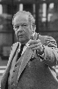

Country:United States, 100 minutes
Spoken languages:
Genres:Drama, Music, Romance
Director(s):Emile Ardolino
Writer(s):Eleanor Bergstein
Video Codec:Unknown
Number: 1542


Certification:PG-13
Storyline:
Expecting the usual tedium that accompanies a summer in the Catskills with her family, 17-year-old Frances 'Baby' Houseman is surprised to find herself stepping into the shoes of a professional hoofer—and unexpectedly falling in love.
Cast: 


Medium: Original DVD,
Loaned: No
Aspect ratio: Unknown